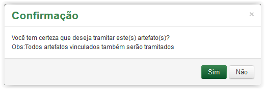
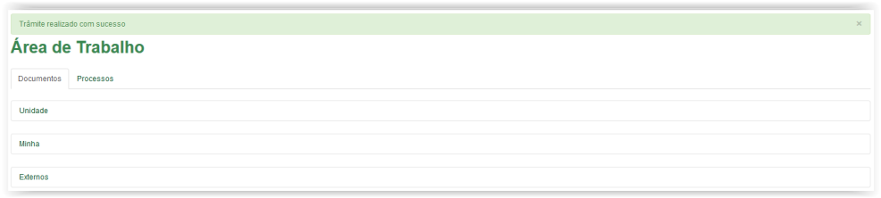

Trâmite interno
Ao tramitar internamente, selecione  a opção Interno em Informações do trâmite. Observe que o campo Destino é obrigatório (Veja Nota1):
a opção Interno em Informações do trâmite. Observe que o campo Destino é obrigatório (Veja Nota1):
Selecionando o Tipo de Trâmite Interno
Informações para trâmite:
Tipo Trâmite: |
Trâmite interno ou externo |
Destino: |
Unidades do ICMBio |
 Preenchendo o trâmite!!
Preenchendo o trâmite!!
Selecionando o tipo de trâmite

Selecionando a Unidade de destino
 para apresentar a mensagem de confirmação abaixo. Caso contrário, se desistir de tramitar, clique no botão
para apresentar a mensagem de confirmação abaixo. Caso contrário, se desistir de tramitar, clique no botão  e o sistema retornará para a tela da Área de Trabalho:
e o sistema retornará para a tela da Área de Trabalho: 
Mensagem de confirmação para tramitar artefato
 o sistema apresenta mensagem de sucesso:
o sistema apresenta mensagem de sucesso:Mensagem de sucesso
Ao tramitar internamente, selecione a opção Interno em Informações do trâmite. Observe que o campo Destino é obrigatório (Veja Nota1):
Selecionando Tipo de Trâmite Interno
Informações para trâmite:
Tipo Trâmite: |
Trâmite interno ou externo |
Destino: |
Unidades do ICMBio |
Usuário: |
Usuários pertencentes à Unidade selecionada |
 Preenchendo o trâmite!!
Preenchendo o trâmite!!

Selecionando o tipo de trâmite
Selecionando a Unidade de destino
Selecionando uma pessoa na lista de Usuário
para apresentar a mensagem de confirmação abaixo. Caso contrário, se desistir de tramitar, clique no botão e o sistema retornará para a tela da Área de Trabalho: Mensagem de confirmação para tramitar artefato
 o sistema retorna para a tela de Trâmite de Artefato sem finalizar o trâmite. No entanto, ao clicar no botão
o sistema retorna para a tela de Trâmite de Artefato sem finalizar o trâmite. No entanto, ao clicar no botão  o sistema apresenta mensagem de sucesso:
o sistema apresenta mensagem de sucesso:
Mensagem de sucesso
IMPORTANTE!!
 Lembrete 1:
Lembrete 1:
O artefato deve possuir imagem para que possa ser tramitado, salvo quando ocorrer o trâmite dentro da Unidade do usuário logado!
 Nota 1:
Nota 1:
Os campos obrigatórios são indicados pelo sinal de asterisco (*) na cor verde ao lado do nome. Quando algum ou nenhum campo obrigatório for preenchido, o sistema apresenta uma mensagem de erro: "Campos de preenchimento obrigatório não foram preenchidos.".
Comportamento da tela de Trâmite ao tentar salvar em branco.
Created with the Personal Edition of HelpNDoc: Free HTML Help documentation generator